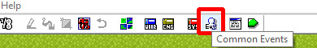
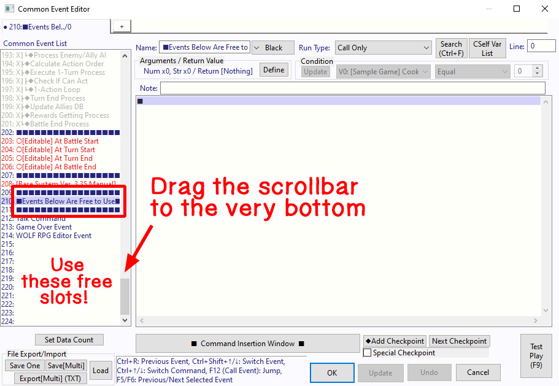
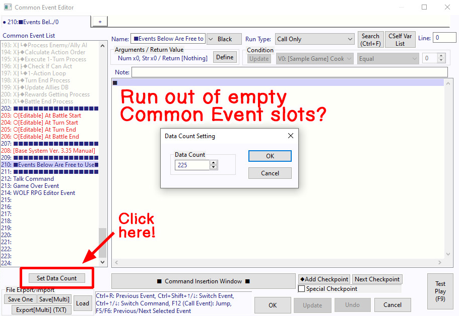
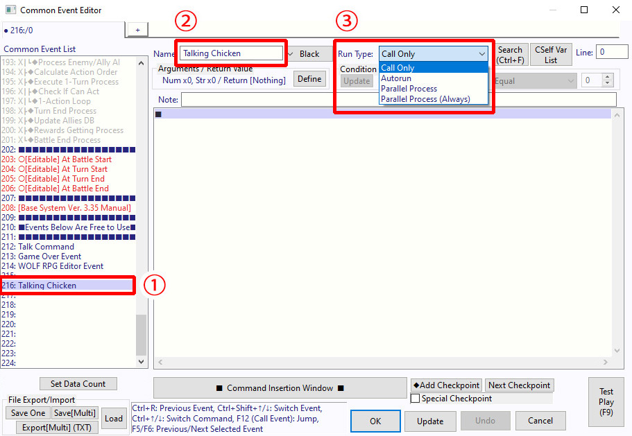
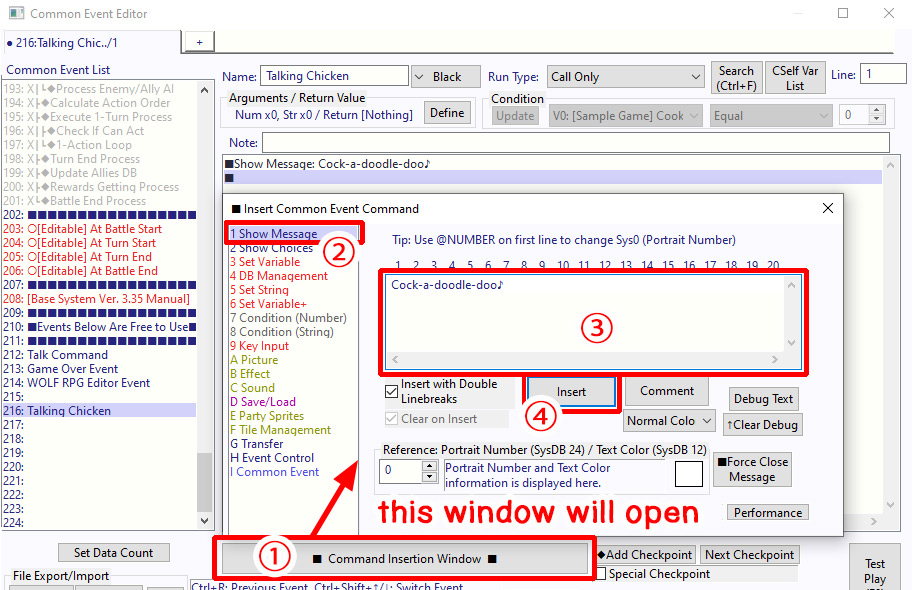
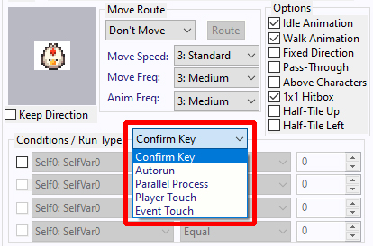
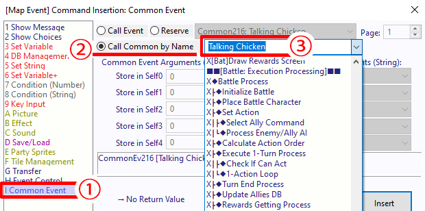
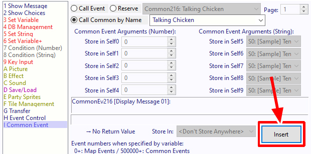
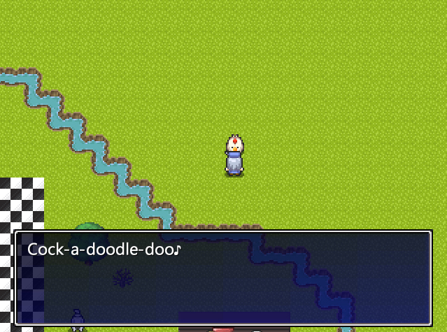

[1] Open the Common Event Editor
Left-click on this icon
open the Common Event Editor.
{kind=link}

[Goal]
Create a new Common Event and call it from a map event.
[1] Open the Common Event Editor Left-click on this icon open the Common Event Editor. |
 |
[2] Look at the Common Event list Scroll down through the Common Event list until you find the section labeled: "■ Events Below Are Free to Use ■". This section is located fairly far down the list, so drag the scrollbar all the way to the bottom to find it. ※ Note: All Common Events below this area can be freely modified and used however you like. |
 |
[3] Run out of empty Common Event slots? If you ever run out of empty Common Events, click the "Set Data Count" button below. A "Data Count Setting" window will appear. To increase the maximum number of Common Events, enter a number larger than the current value displayed on the screen. But be careful if you decrease the number! This will permanently delete any Common Events in the removed slots (along with all of their contents), so use caution. |
 |
[4] Create a new Common Event 1. Select one of the empty Common Event slots. For this example, we'll use: Common Event slot 216 2. Enter a Common Event Name. Choose something easy to identify. Let's enter "Talking Chicken". ※ Note: If left blank, the Common Event cannot be called by name later, so giving it a name is recommended. 3. Set the event Trigger. Since this Common Event will be called from a map event, select "Call Only". |
 |
|
[5] Displaying a message 1. Click "■ Open Command Window ■". 2. Select "1 Show Message". 3. Enter the following text: "Cock-a-doodle-doo♪" 4. Click "Insert" to add the command. Your new Common Event is now created! |
 |
[6] Create a map event First, use the Map Selection the map where you'd like to create the event. Create a new event somewhere on the map and assign the chicken graphic to it. For detailed instructions, refer to steps [1]–[5] of ◆ Events activated by the Confirm key. |
 |
[7] Call the Common Event Click "■ Open Command Window ■" in the lower-right corner of the Event window. 1. In the Insert Event Command window, select "I Common Event". 2. Make sure that "Call Event by Name" is selected. 3. Click the field highlighted in the screenshot. A list of available Common Events will appear. Scroll down and select the Common Event Talking Chicken" we created earlier. |
 |
|
[8] Great work! The event setup is now complete. Click "Insert". |
 |
[9] Test Play Start a Test Play session and talk to the event you created. If the following message appears: "Cock-a-doodle-doo♪" ...then everything is working correctly. Congratulations! ※ If it doesn't work: 1. You may have selected the wrong Common Event. 2. The Common Event contains no commands. → Creating a new Common Event ← Creating your first event |
 |
Written by Kijiko ◆ English edition lovingly prepared by Anya & Lolo
[If you don't see the navigation frame on the left, click here]
{kind=link}